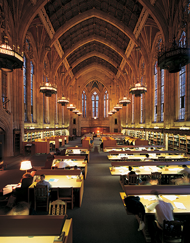
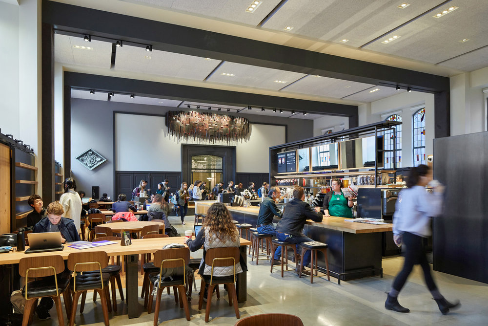

Suzzalo Library

Suzzalo Library the most famous library at the University of Washington. Featuring over 350,000 square feet of study space with accessible ramps at the front of the Red Square entrace.
- Operating Hours: 9:00am-5:00pm
- Noise Rating: Mediocre
- Accessibility Rating: High

Inside you will find a starbucks. With plenty of study tables and space for socializing!